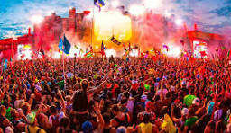

¿Qué es un festival de música?
Un festival de música es un evento que reúne a artistas y público para disfrutar de actuaciones en vivo. Estos eventos suelen durar varios días y ofrecen una experiencia única.
Festivales populares
- Coachella
- Glastonbury
- Tomorrowland
- Ambiente único
- Variedad de géneros musicales
- Experiencia cultural